카피바라 지구를 지켜라! — 1차 구현 결과
2026-11-15 · Unity 6000.0.84f1 · 자동 시험 42줄 통과 · 오류 0 (bash tools/unity_batch.sh EarthDef.EditorTools.PlayTest.Run --play) · 화면은 시험이 직접 찍은 1080x2340 캡처
먼저 알려 드릴 것 (제 해석 · 1차에서 뺀 것)
- 대장 카피 2판(앞모습 우주인)으로 넣었습니다. 고칠 점이 있으면 샘플 문서의 s-hero2 칸에 적어 주세요 — 같은 이름·크기로 바꿔 끼우면 됩니다.
- 카드 규칙 원작대로: 강화 보장 없음 · 새로고침은 광고 1번(지금은 [초안] — 누르면 바로).
Config의Card_Upgrade_Guarantee·Refresh_Ad·Refresh_Free숫자만 바꾸면 달라집니다. - 별 4개가 차면 그 터렛은 돌파를 골라야 다시 강화 카드가 나옵니다 (기획서 "별이 단계를 채우면 돌파가 열림"을 이렇게 읽음). 돌파는 터렛마다 2줄(A·B), 어느 줄이든 1단계→2단계, 남은 줄로 2→3단계.
- 새 터렛 카드도 별 1개로 셉니다(기획서 "터렛 카드를 고를 때마다 별"). 빈 칸은 안쪽부터(왼쪽 안 → 오른쪽 안 → 왼쪽 밖 → 오른쪽 밖).
- 터렛 사거리: 기획서 숫자 그대로면 가디언이 다 잡아 관통포·레이저가 거의 안 쏴서, 사거리에 1.3배(
Range_Scale)를 곱했습니다. 끈끈이 드론 장판은 화면 전체. - 밸런스는 아직 처음 값: 스테이지 1은 기지가 한 번도 안 맞을 만큼 쉽습니다(200초 Lv 18). 시스템을 다 넣은 뒤 마지막에 시뮬레이터로 맞추겠습니다.
- 1차에서 아직 못 한 것: 소리(배경음 · 효과음) — 계획 ⑤에 1차로 적었는데 이번엔 넣지 못했습니다. 다음에 카치건 방식으로 합성해 넣겠습니다. 그 밖에 스태미나 · 장비/칩 · 엘리트 난이도 · 나머지 터렛 6종은 계획대로 2차.
- 주아 글꼴엔 가운뎃점 · × · → 가 없어 화면 글자는 쉼표 · x · > 로 바꿨고, 자동 시험이 "글꼴에 없는 글자"를 잡아냅니다.
① 시험이 찍은 화면
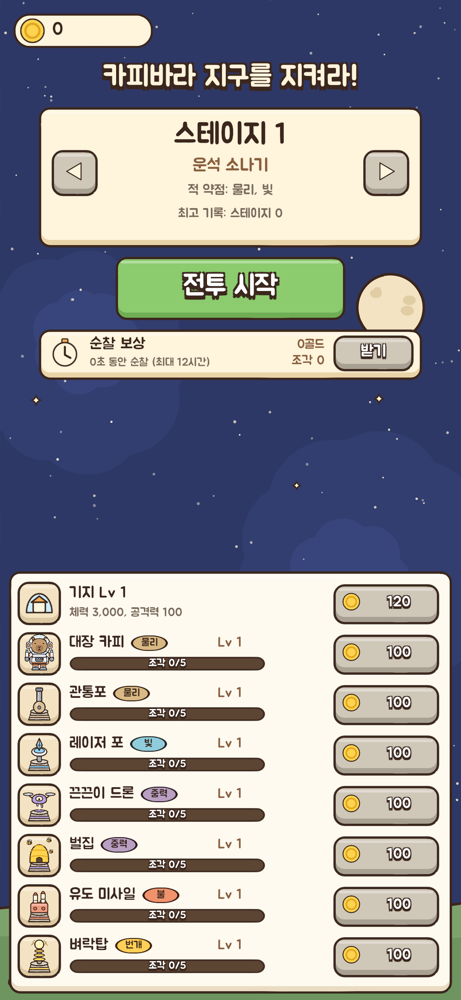
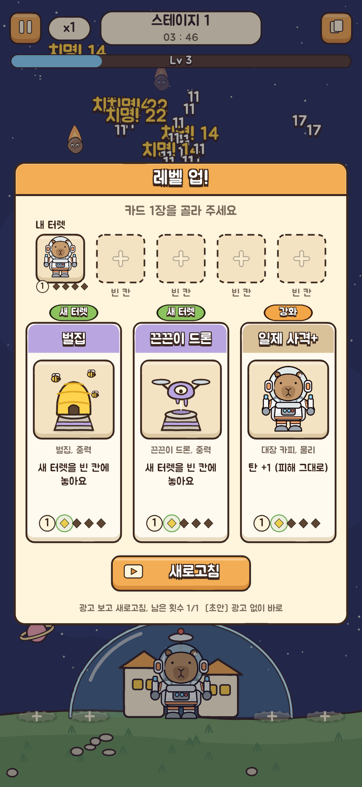
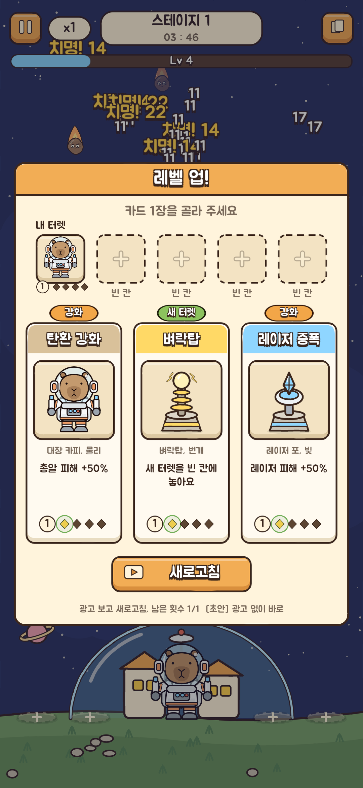
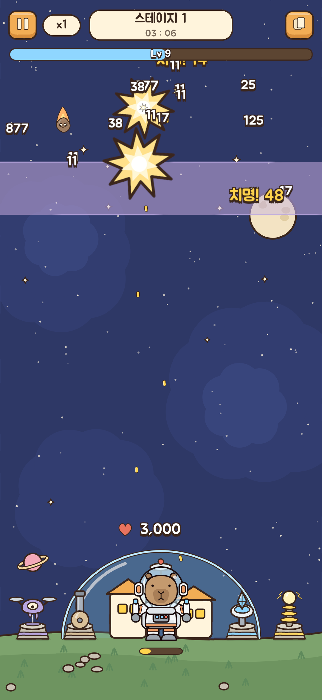
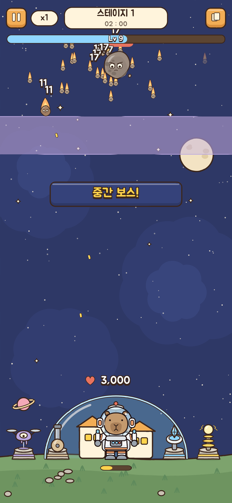
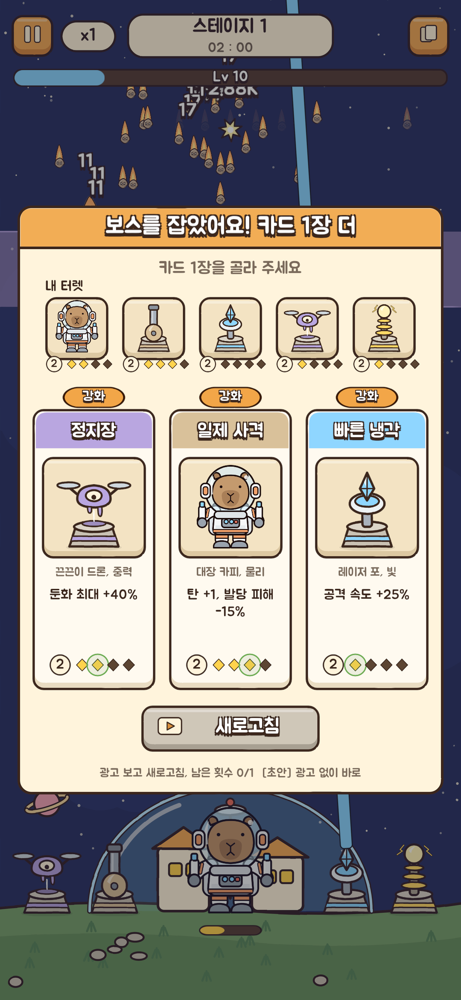
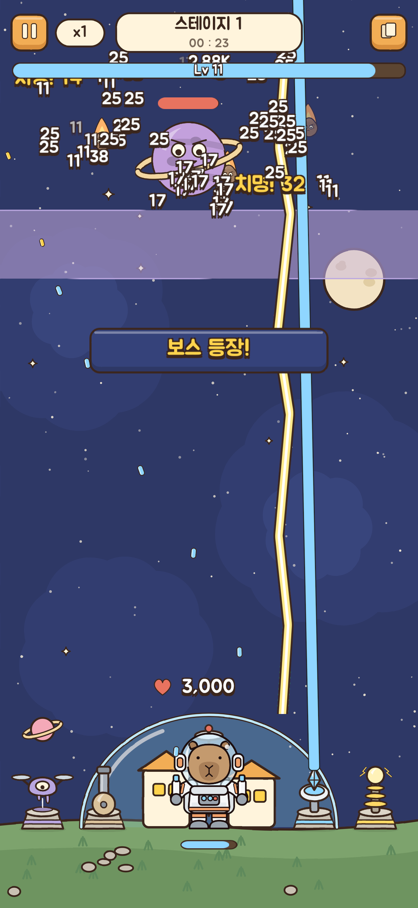
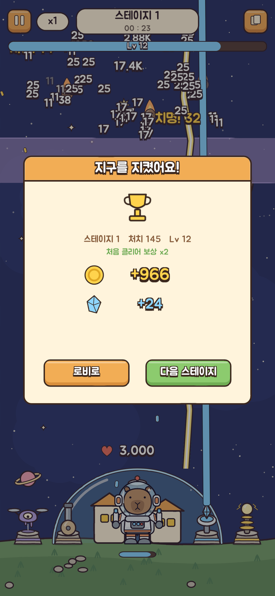
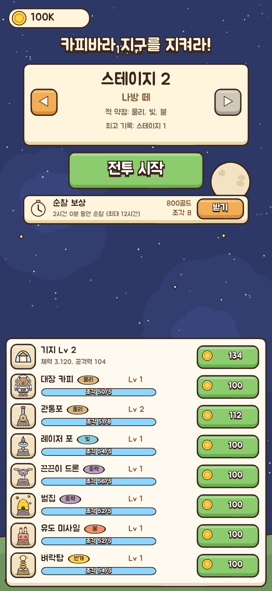
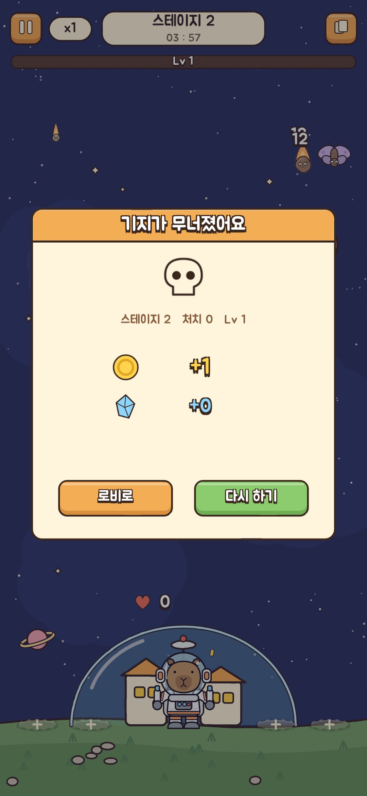
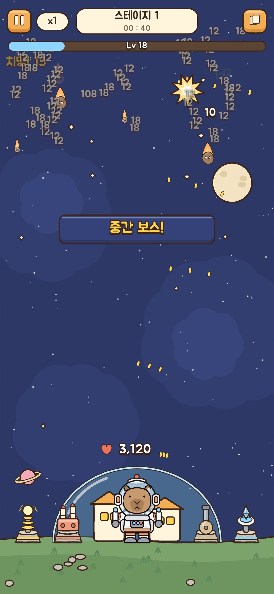
② 1차에 들어간 것
| 부분 | 내용 |
|---|---|
| 전투 | 고정 간격(1/60초) 진행 · 화면 크기와 상관없는 월드 좌표 · 4분(Config) · 30초마다 몰려오기 · 2분 중간 보스 · 3분 30초 마지막 보스(부하를 부름) · 보스 처치 = 승리, 기지 체력 0 = 패배 · 배속 x1/x1.5 · 일시정지(계속/포기) |
| 가디언 | 쌍권총 연사(양손 번갈아) · 화면을 끌면 좌우 이동 · 충전 사격(돌파 B 줄을 고르면 노란 게이지) |
| 터렛 6종 | 관통포(관통 · 폭발/분열) · 레이저 포(갈래/휘두르기) · 끈끈이 드론(가로 장판 · 둔화 · 제압/두 번째 장판) · 벌집(쫓아가는 벌 · 펄스/메아리) · 유도 미사일(폭발 · 소형 미사일/화상 · 불바다) · 벼락탑(세로 낙뢰 · 마비/연쇄 번개) · 단계가 오르면 그림이 커짐 |
| 카드 102장 | 새 터렛 6 · 강화 · 돌파 · 연계 · 콤보 15 — 아래 ④ 목록. 이름·설명·수치는 전부 Card.xlsx |
| 피해 공식 | 기획서 6-3: ATK x 배율 x (1+일반 합) x (1+후반 합) x 치명 x 약점 1.5 / 저항 0.6 x 거리(가까우면 1.1 · 멀면 0.9) · 탄 +1 카드 발당 -15% · 취약 · 장갑 · 상태이상(둔화 · 마비(보스 면역) · 화상 · 취약) |
| 적 19종 | 일반 13(운석 5 · 벌레 3 · 젤리 3 · 함선 2) · 엘리트 4(큰 소행성 · 왕나방 · 강철 딱정벌레 · 모선) · 보스 2(떠돌이 행성 · 젤리 여왕) · 움직임 6가지 · 운석은 방어막에 부딪쳐 터짐 · 쪼개지는 운석/분열 젤리는 죽으면 갈라짐 |
| 스테이지 30 | 테마형(운석 소나기 · 나방 떼 · 거미 언덕 …) · 스테이지마다 섞이는 적 · 몰려오는 적 · 중간 보스 · 보스 (Stage.xlsx) |
| 로비 · 성장 | 터렛 레벨 Lv45(조각 + 골드, 레벨당 피해 +8% · Lv8·16·28·36 쿨 감소) · 기지 레벨(체력 · 공격력) · 순찰 보상(최고 스테이지 기준, 최대 12시간) · 처음 클리어 2배 · 세이브 |
| 표 6개 | Earth_Defence/Table/ Config · Turret(+Turret_Level) · Card · Enemy · Stage · String — 재생할 때 자동으로 csv. 처음 값은 tools/make_tables.py |
| 그림 | tools/earth_export.py 105장 (배경 · 가디언 · 터렛 · 적 + 흰 번쩍 · 효과 · UI · 아이콘) |
③ 봐 주실 것 ✎ 의견 칸
④ 카드 102장 목록 Card.xlsx 그대로
대장 카피 (17장)
| 종류 | 이름 | 설명 | 최대 | 조건 |
|---|---|---|---|---|
| 강화 | 탄환 강화 | 총알 피해 +50% | 3 | |
| 강화 | 일제 사격 | 탄 +1, 발당 피해 -15% | 2 | |
| 강화 | 일제 사격+ | 탄 +1 (피해 그대로) | 1 | |
| 강화 | 속사 | 연사 속도 +20% | 3 | |
| 강화 | 관통탄 | 총알이 적 1마리를 더 꿰뚫음 | 3 | |
| 강화 | 정밀 조준 | 치명 확률 +10% | 2 | |
| 돌파 | 폭발탄 | 맞히면 10% 확률로 작은 폭발 | 1 | 줄 A |
| 연계 | 폭발 확장 | 폭발 범위 +50% | 1 | 돌파 뒤 (줄 A) |
| 연계 | 폭발 강화 | 폭발 피해 +60%, 확률 +10% | 1 | 돌파 뒤 (줄 A) |
| 돌파 | 충전 사격 | 맞힐 때마다 충전 → 가득 차면 5초 동안 충전탄 | 1 | 줄 B |
| 연계 | 빠른 충전 | 충전 속도 +100% | 1 | 돌파 뒤 (줄 B) |
| 연계 | 지속 충전 | 충전 중 발사 수 2배 | 1 | 돌파 뒤 (줄 B) |
| 콤보 | 불꽃탄 | 총알에 불 피해 +30% | 1 | + 유도 미사일 |
| 콤보 | 전기탄 | 처치하면 50% 확률로 작은 낙뢰 | 1 | + 벼락탑 |
| 콤보 | 레이저 사격 | 맞히면 10% 확률로 작은 레이저 | 1 | + 레이저 포 |
| 콤보 | 끈끈탄 | 맞은 적 둔화 +10% | 1 | + 끈끈이 드론 |
| 콤보 | 꿀벌 탄환 | 처치하면 20% 확률로 벌 1마리 | 1 | + 벌집 |
관통포 (17장)
| 종류 | 이름 | 설명 | 최대 | 조건 |
|---|---|---|---|---|
| 새 터렛 | 관통포 | 새 터렛을 빈 칸에 놓아요 | 1 | |
| 강화 | 탄약 강화 | 포탄 피해 +50% | 3 | |
| 강화 | 탄약 강화+ | 포탄 피해 +100% | 1 | |
| 강화 | 포탄 일제 사격 | 포탄 +1, 발당 피해 -15% | 2 | |
| 강화 | 관통포 개량 | 피해 +30%, 관통 +1 | 2 | |
| 강화 | 파워 관통 | 관통 +3 | 1 | |
| 강화 | 치명 포탄 | 피해 +40%, 치명 확률 +30% | 1 | |
| 강화 | 빠른 장전 | 공격 속도 +25% | 2 | |
| 돌파 | 폭발 포탄 | 포탄이 맞힐 때마다 폭발 | 1 | 줄 A |
| 연계 | 충격 확산 | 폭발 범위 +60% | 1 | 돌파 뒤 (줄 A) |
| 연계 | 충격 강화 | 폭발 피해 +100% | 1 | 돌파 뒤 (줄 A) |
| 돌파 | 분열탄 | 처음 맞히면 작은 포탄 2개로 갈라짐 | 1 | 줄 B |
| 연계 | 분열 강화 | 작은 포탄 +2 | 1 | 돌파 뒤 (줄 B) |
| 연계 | 분열 숙련 | 작은 포탄 피해 +100% | 1 | 돌파 뒤 (줄 B) |
| 콤보 | 약점 표식 | 포탄에 맞은 적이 받는 피해 +15% | 1 | + 대장 카피 |
| 콤보 | 전류 관통 | 처치하면 50% 확률로 작은 낙뢰 | 1 | + 벼락탑 |
| 콤보 | 빛 쪼개기 | 맞히면 20% 확률로 작은 레이저 | 1 | + 레이저 포 |
레이저 포 (14장)
| 종류 | 이름 | 설명 | 최대 | 조건 |
|---|---|---|---|---|
| 새 터렛 | 레이저 포 | 새 터렛을 빈 칸에 놓아요 | 1 | |
| 강화 | 레이저 증폭 | 레이저 피해 +50% | 3 | |
| 강화 | 안정 에너지 | 쏘는 시간 +40% | 2 | |
| 강화 | 멀티 스트라이크 | 쏘는 시간 +100%, 공격 속도 +20% | 1 | |
| 강화 | 고에너지 펄스 | 레이저 굵기 +100% | 1 | |
| 강화 | 빠른 냉각 | 공격 속도 +25% | 2 | |
| 돌파 | 갈래 레이저 | 레이저가 두 갈래로 갈라져 나가요 | 1 | 줄 A |
| 연계 | 둔화 레이저 | 맞은 적 둔화 +30% | 1 | 돌파 뒤 (줄 A) |
| 연계 | 갈래 추가 | 갈래 레이저 +2 | 1 | 돌파 뒤 (줄 A) |
| 돌파 | 휘두르기 레이저 | 쏘는 동안 좌우로 휘둘러요 | 1 | 줄 B |
| 연계 | 약점 노출 | 맞은 적이 받는 피해 +20% | 1 | 돌파 뒤 (줄 B) |
| 연계 | 휘두르기 강화 | 피해 +60%, 쏘는 시간 +30% | 1 | 돌파 뒤 (줄 B) |
| 콤보 | 에너지 마비 | 틱마다 5% 확률로 마비 | 1 | + 벼락탑 |
| 콤보 | 끈끈 레이저 | 맞은 적 둔화 +20% | 1 | + 끈끈이 드론 |
끈끈이 드론 (15장)
| 종류 | 이름 | 설명 | 최대 | 조건 |
|---|---|---|---|---|
| 새 터렛 | 끈끈이 드론 | 새 터렛을 빈 칸에 놓아요 | 1 | |
| 강화 | 장판 증폭 | 장판 피해 +50% | 2 | |
| 강화 | 장판 확장 | 장판 두께 +30% | 2 | |
| 강화 | 장판 지속 | 장판 시간 +30% | 2 | |
| 강화 | 빠른 진동 | 틱 간격 -30% | 1 | |
| 강화 | 정지장 | 둔화 최대 +40% | 1 | |
| 강화 | 빠른 재배치 | 공격 속도 +25% | 2 | |
| 돌파 | 장판 제압 | 느린 적일수록 피해 최대 +200% | 1 | 줄 A |
| 연계 | 마지막 폭발 | 장판이 사라질 때 폭발 | 1 | 돌파 뒤 (줄 A) |
| 연계 | 수렴 장판 | 장판이 적을 가운데로 끌어당김 | 1 | 돌파 뒤 (줄 A) |
| 돌파 | 두 번째 장판 | 장판을 2개 깔아요 | 1 | 줄 B |
| 연계 | 넓은 판 | 장판 두께 +50% | 1 | 돌파 뒤 (줄 B) |
| 연계 | 진동 장판 | 틱마다 5% 확률로 마비 | 1 | 돌파 뒤 (줄 B) |
| 콤보 | 방해 번개 | 장판 안에서 죽으면 30% 확률로 작은 낙뢰 | 1 | + 벼락탑 |
| 콤보 | 불타는 장판 | 장판에 맞은 적 화상 | 1 | + 유도 미사일 |
벌집 (14장)
| 종류 | 이름 | 설명 | 최대 | 조건 |
|---|---|---|---|---|
| 새 터렛 | 벌집 | 새 터렛을 빈 칸에 놓아요 | 1 | |
| 강화 | 군집 공습 | 벌 피해 +50% | 3 | |
| 강화 | 속사 포화 | 벌 공격 횟수 +2 | 3 | |
| 강화 | 밀집 군집 | 벌 +2, 피해 -15% | 2 | |
| 강화 | 밀집 군집+ | 벌 +2 (피해 그대로) | 1 | |
| 강화 | 빠른 부화 | 공격 속도 +25% | 2 | |
| 돌파 | 접촉 펄스 | 벌이 처음 맞히면 둥근 펄스파 | 1 | 줄 A |
| 연계 | 증폭 펄스 | 펄스 범위 +30%, 둔화 | 1 | 돌파 뒤 (줄 A) |
| 연계 | 최후의 공명 | 벌이 사라질 때도 펄스파 | 1 | 돌파 뒤 (줄 A) |
| 돌파 | 메아리 벌 | 적을 잡으면 메아리 벌이 나와요 | 1 | 줄 B |
| 연계 | 메아리 강화 | 메아리 벌 공격 +3 | 1 | 돌파 뒤 (줄 B) |
| 연계 | 꿀벌 진화 | 벌 피해 +80% | 1 | 돌파 뒤 (줄 B) |
| 콤보 | 전기 벌 | 벌이 맞히면 50% 확률로 번개가 튐 | 1 | + 벼락탑 |
| 콤보 | 탄환 벌 | 벌이 한 번에 2발씩 | 1 | + 대장 카피 |
유도 미사일 (13장)
| 종류 | 이름 | 설명 | 최대 | 조건 |
|---|---|---|---|---|
| 새 터렛 | 유도 미사일 | 새 터렛을 빈 칸에 놓아요 | 1 | |
| 강화 | 미사일 부스트 | 미사일 피해 +50% | 3 | |
| 강화 | 일제 미사일 | 미사일 +1, 발당 피해 -15% | 2 | |
| 강화 | 폭발 확산 | 폭발 범위 +30% | 2 | |
| 강화 | 빠른 발사 | 공격 속도 +25% | 2 | |
| 강화 | 강력 충격 | 미사일 피해 +100% | 1 | |
| 돌파 | 소형 미사일 | 맞힌 뒤 작은 미사일 3발 | 1 | 줄 A |
| 연계 | 미사일 증폭 | 작은 미사일 +3 | 1 | 돌파 뒤 (줄 A) |
| 연계 | 열 탄두 | 작은 미사일 피해 +100% | 1 | 돌파 뒤 (줄 A) |
| 돌파 | 점화 | 맞은 적에 화상 | 1 | 줄 B |
| 연계 | 점화 증폭 | 화상 피해 +100% | 1 | 돌파 뒤 (줄 B) |
| 연계 | 발화 지대 | 떨어진 자리에 5초 불바다 | 1 | 돌파 뒤 (줄 B) |
| 콤보 | 폭뢰 | 처치하면 30% 확률로 폭발 | 1 | + 벼락탑 |
벼락탑 (12장)
| 종류 | 이름 | 설명 | 최대 | 조건 |
|---|---|---|---|---|
| 새 터렛 | 벼락탑 | 새 터렛을 빈 칸에 놓아요 | 1 | |
| 강화 | 번개 부스트 | 낙뢰 피해 +50% | 3 | |
| 강화 | 연속 낙뢰 | 낙뢰 +1, 발당 피해 -15% | 2 | |
| 강화 | 번개 확장 | 낙뢰 굵기 +100% | 1 | |
| 강화 | 신속 낙뢰 | 공격 속도 +20%, 피해 +30% | 2 | |
| 강화 | 긴 낙뢰 | 치는 시간 +50% | 2 | |
| 돌파 | 번개 마비 | 틱마다 30% 확률로 마비 | 1 | 줄 A |
| 연계 | 마비 연장 | 마비 시간 +100% | 1 | 돌파 뒤 (줄 A) |
| 연계 | 마비 충격 | 마비된 적에게 피해 +100% | 1 | 돌파 뒤 (줄 A) |
| 돌파 | 연쇄 번개 | 맞은 적에서 번개가 3번 튀어요 | 1 | 줄 B |
| 연계 | 연쇄 확장 | 튀는 번개 +4 | 1 | 돌파 뒤 (줄 B) |
| 연계 | 연쇄 강화 | 튀는 번개 피해 +100% | 1 | 돌파 뒤 (줄 B) |